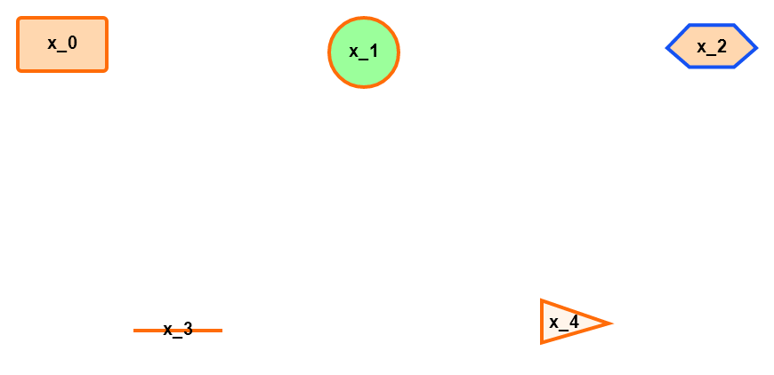

Introduction¶
SBMLDiagrams is a Python package to visualize networks embedded in SBML Level 3 models. If the SBML layout and render extension are used, the package will use this data to display the network. SBMLDiagrams can export PNG, JPG, PDF files. SBMLDiagrams can be used to add SBML layout and render to an existing valid SBML model which can subsequently be exported.
We also have an interface of SBMLDiagrams to NetworkX to exploit the variety of layout algorithms. If you are using any of the code, please cite the arXiv (http://arxiv.org/abs/2204.12611) and the PYPI web page (https://pypi.org/project/SBMLDiagrams/).
Figure Examples¶
1) An example with only nodes (no reactions in the network). There are five types of node shapes with different fill colors and border colors.
{kind=link}
2) An example without compartment. There are different shapes of nodes with different fill colors. Texts can be placed outside the nodes with designed positions. There are also reactions with different fill colors. x_1 is an example of alias node.

3) An example with compartments. The compartments are filled with different colors. There are different shapes of nodes with different border colors. x_1 and x_5 are examples of alias nodes.

An example with long text contents. Its animation is also available at https://youtu.be/zF3_fkDp2Xk.